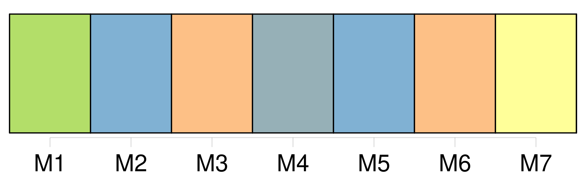

Longueur nb maillons : 10 mentions |
 |
Au bout de six semaines, en janvier, un geôlier le réveilla, une nuit, l'enferma dans une cour, avec [quatre cents et quelques autres prisonniers] Une heure plus tard, [ce premier convoi] partait pour les pontons et l'exil, les menottes aux poignets, entre deux files de gendarmes, fusils chargés. [Ils] traversèrent le pont d'Austerlitz, [suivirent] la ligne des boulevards, arrivèrent à la gare du Havre. C'était une nuit heureuse de carnaval ; les fenêtres des restaurants du boulevard luisaient ; à la hauteur de la rue Vivienne, à l'endroit où il voyait toujours la morte inconnue dont il emportait l'image, Florent aperçut, au fond d'une grande calèche, des femmes masquées, les épaules nues, la voix rieuse, se fâchant de ne pouvoir passer, faisant les dégoûtées devant « [ces forçats] [qui] n'en finissaient plus. » De Paris au Havre, [les prisonniers] n'eurent pas une bouchée de pain, pas un verre d'eau ; on avait oublié de [leur] distribuer des rations avant le départ.
[Ils] ne mangèrent que trente-six heures plus tard, quand on [les] eut entassés dans la cale de la frégate le Canada. |

|
Il est possible de télécharger la ressource sur la page Ortolang |
Si vous avez des questions ou vous voyez des erreurs, merci d'envoyer un mail à silvia.federzoni89@gmail.com |